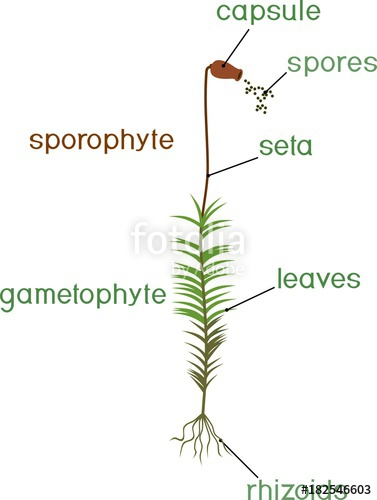
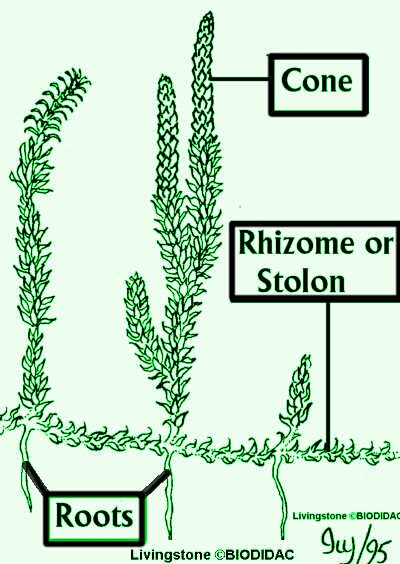
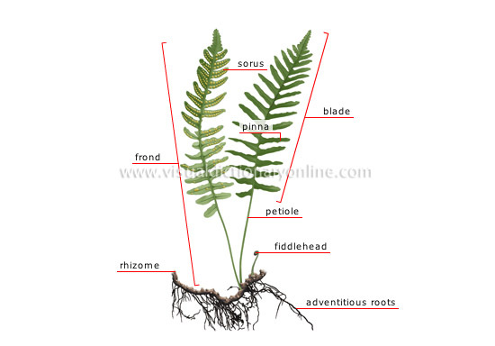
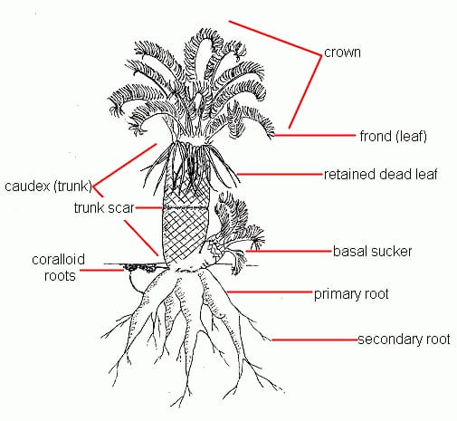
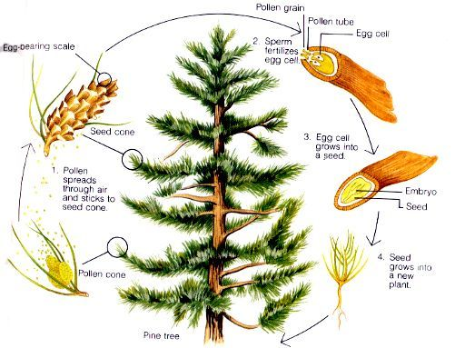
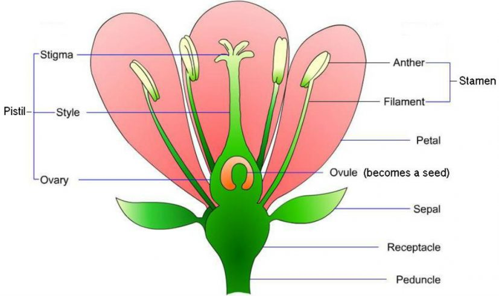

| Bryophyta | Lycophyta
| pterophyta |
cycadophyta |
coniferophyta |
anthophyta |
- No proper root or shoot system
|
- Clade of vascularr plants.
|
- Group of vascular plants that reproduce via spores and have neither seeds nor flowers.
|
Seed plants with a very long fossil history that were formerly more abundant and more diverse. |
Vascular land plants containing a single extant class,Pinopsida. |
Largest and youngest phylum of plants and the one whose members dominate the vegetation of the modern world. |
|
Similar to ferns but have unique leaves called microphylls |
Having specialized tissues that conduct water and nutrients. |
Usually have pinnate leaves. |
Most conifers are monoecious
<
A living conifers are woody plants,andmost are trees. |
|
|
reproduction :sexual and asexual
- eg:-
- mosses
- liverwortshornworts
|
They are primitive plants and lackseeds,wood,fruit and fowers.
- eg:-
- club mosses
- quilworts
- spike mosses
|
eg:-ferns |
eg:-cycas |
- eg:-
- Cypress
- Juniper
- Redwood
- Yew
|
They developed adaptations that made them ever more successful in the competition for a placce in the sun.
eg:-flowers |
|  |
 |
 |
 |
 |
 |